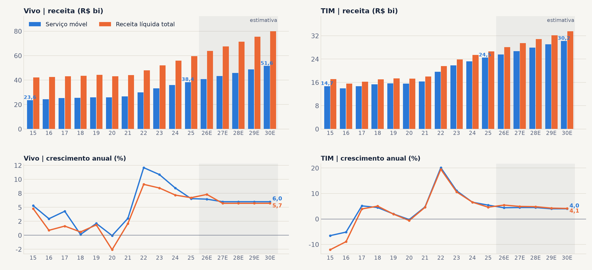
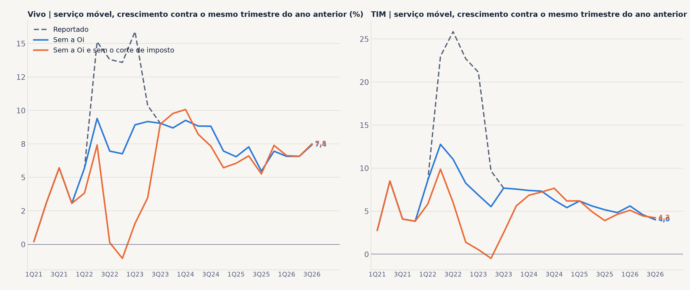
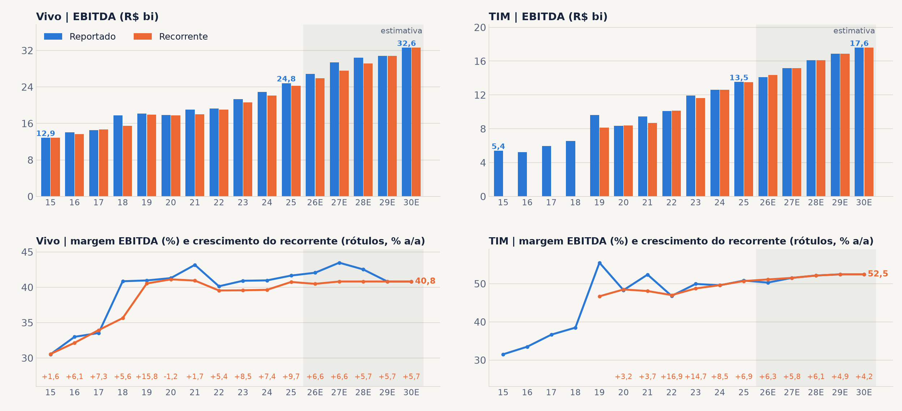
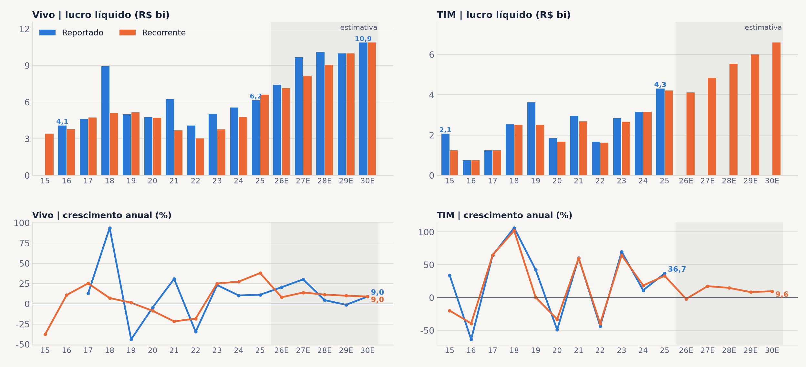
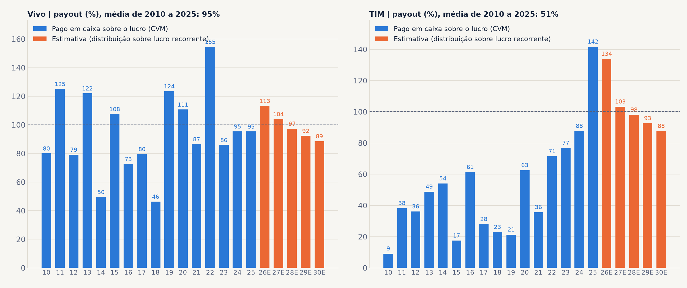
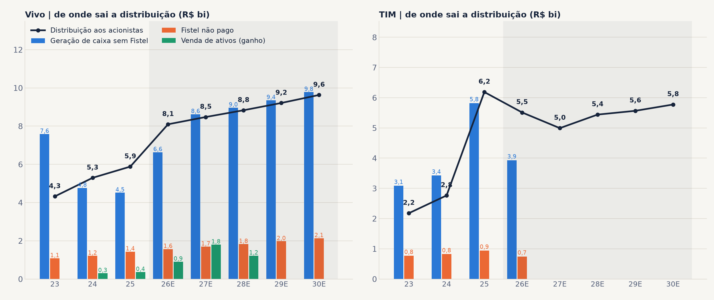
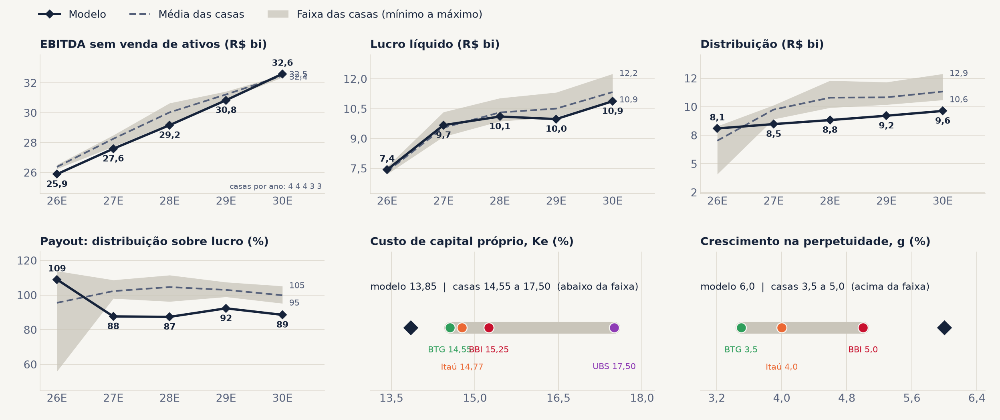
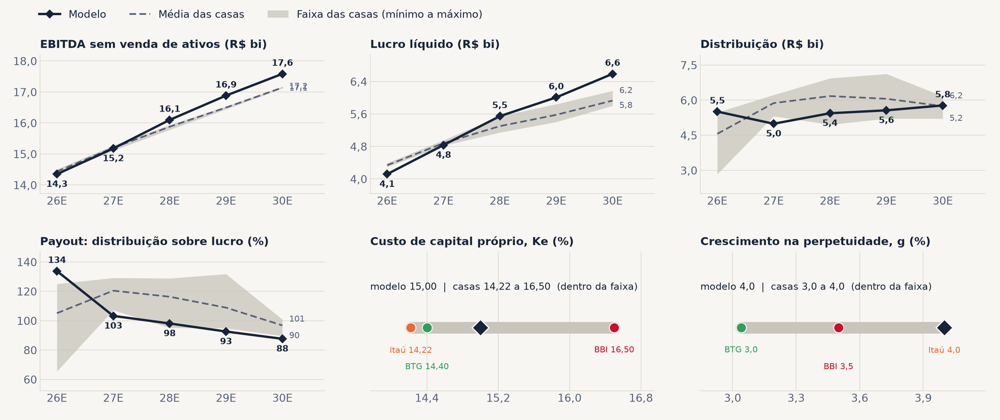

Receita, EBITDA, lucro, payout e valuation, com histórico e estimativas
Receita móvel e total · EBITDA e margem · Lucro líquido · Payout, venda de ativos e Fistel · Valuation · Modelo contra as casas
1 · RECEITA
Serviço móvel cresce 6,5% na Vivo e 4,4% na TIM em 2026E; a estimativa leva a Vivo a 6,0% e a TIM a 4,0% até 2030

Fonte: planilhas de RI das companhias; estimativas dos modelos de 23/11/2026. TIM: serviço móvel = receita de serviços menos receita fixa.
1A · SEM A OI E SEM O CORTE DE IMPOSTO
No 4T22 a TIM reportou +22,7% e a Vivo +13,6%; sem a Oi e sem o corte de imposto, +1,4% e -1,1%

Fonte: releases e ITR/DFP das companhias (CVM). Receita da Oi estimada pelos clientes recebidos; imposto pela relação entre receita bruta e líquida.
2 · EBITDA E MARGEM
EBITDA recorrente cresce 6,6% na Vivo e 6,3% na TIM em 2026E, com margem de 40,5% e 51,1%

Fonte: planilhas de RI das companhias; estimativas dos modelos de 23/11/2026. O reportado da Vivo inclui venda de ativos (cobre e imóveis) de 2024 a 2028E.
3 · LUCRO LÍQUIDO
Lucro recorrente: Vivo de 6,6 bi em 2025 para 8,1 bi em 2027E; TIM de 4,2 bi para 4,8 bi, com 2026E parado em 4,1 bi

Fonte: planilhas de RI e CVM (DFP); estimativas dos modelos de 23/11/2026. TIM: lucro reportado da CVM até 2025; o modelo não projeta o reportado.
4 · PAYOUT
As duas distribuem mais que o lucro em 2026E: Vivo 113% e TIM 134%; a estimativa volta para perto de 90% em 2030E

Fonte: CVM (DFP, fluxo de caixa: dividendos, JCP, recompra e redução de capital sobre o lucro). Estimativas: distribuição sobre lucro recorrente, modelos de 23/11/2026 (Vivo) e 21/11/2026 (TIM).
4A · A AJUDA DOS IMÓVEIS E DO FISTEL
Em 2026E a distribuição supera a geração de caixa sem Fistel: 8,1 bi contra 6,6 bi na Vivo e 5,5 bi contra 3,9 bi na TIM

Fonte: ITR/DFP das companhias e modelos. Vivo: de 2027E em diante o modelo assume o Fistel pago, e a barra laranja mostra o que deixaria de sair se a suspensão continuar. TIM: o modelo só abre a geração de caixa até 2026E.
5 · VALUATION
O Fistel decide o potencial: com metade paga, Vivo +4,0% e TIM +15,6%; se continuar sem ser pago, +14,1% e +24,2%
Vivo
TIM
Preço no modelo (R$)
35,42
20,94
Custo de capital próprio (Ke)
13,85%
15,0%
Crescimento na perpetuidade
6,0%
4,0%
Alvo dez/2026, sem Fistel (R$)
33,70 (-6,1%)
21,05 (-1,0%)
Alvo se 50% do Fistel for pago (R$)
37,34 (+4,0%)
24,55 (+15,6%)
Alvo se o Fistel continuar sem ser pago (R$)
40,98 (+14,1%)
26,38 (+24,2%)
Retorno implícito no preço, sem Fistel
13,2%
14,9%
As premissas ainda diferem entre os dois modelos: Ke de 13,85% e crescimento de 6,0% na Vivo; 15,0% e 4,0% na TIM. Em 23/11/2026 o prefixado de 10 anos estava em 15,3% e a NTN-B longa em 7,8% real.
Fonte: modelos de Vivo (23/11/2026) e TIM (24/11/2026). Vivo: o caso sem pagamento é o dobro do efeito do caso de 50% do modelo. TIM: no caso de 50%, o passivo já acumulado segue suspenso e rendendo juros.
6 · MODELO CONTRA AS CASAS · VIVO · 2026E A 2030E
Vivo: o modelo fica abaixo das casas em distribuição de 2027E a 2030E (9,6 bi contra 10,6 a 12,9 bi em 2030E), com Ke menor e crescimento maior que os de todas

Casas: Itaú BBA (modelo de depois do 2T26), BBI (prévia do 3T26), BTG (depois do 2T26) e UBS (15/11/2026; EBITDA até 2028E; alvo por múltiplo, sem g). Lucro do modelo: reportado, com venda de ativos, como o das casas.
6 · MODELO CONTRA AS CASAS · TIM · 2026E A 2030E
TIM: o modelo passa das casas em EBITDA e lucro de 2028E em diante (lucro de 6,6 bi em 2030E contra 5,8 a 6,2 bi), mas distribui menos do lucro

Casas: Itaú BBA (modelo de depois do 3T26), BBI (prévia do 3T26) e BTG (antes do 3T26). Lucro do modelo: recorrente. A faixa larga da distribuição de 2026E vem do BBI, que iguala a distribuição ao fluxo de caixa do acionista.